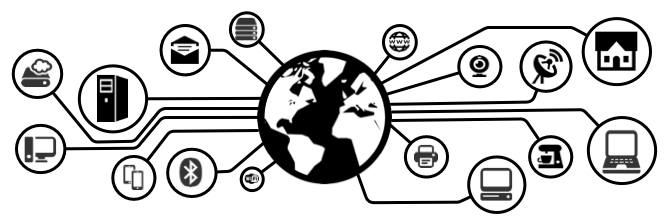

What is Patchwork Toolkit?

Patchwork is a toolkit for connecting various devices into a network of things or, in a more broad case - Internet of Things (IoT). The main goal of creating this toolkit is to have a lightweight set of components that can help to quickly integrate different devices (i.e. Arduinos, RaspberryPI's, Plugwise, etc) into a smart environment and expose specific devices' capabilities as RESTful/SOAP/CoAP/MQTT/etc services.
Documentation
You can find a detailed documentation on getting started with toolki in the Wiki.
Introduction
- Overview
- General architecture
- What is Device Gateway?
- What is Device Catalog?
- What is Service Catalog?
Getting Started
Configuration
Deployment examples
- Single all-in-one box
- Multiple Device Gateways with optional central Device Catalog
- Using central Service Catalog
API for Application developers
Integrating devices
- TBD...
Authors and Contributors
- Oleksandr Lobunets (@oleksandr)
- Alexandr Krylovskiy (@krylovsk)
License
The MIT License
Copyright © 2014
Permission is hereby granted, free of charge, to any person obtaining a copy of this software and associated documentation files (the "Software"), to deal in the Software without restriction, including without limitation the rights to use, copy, modify, merge, publish, distribute, sublicense, and/or sell copies of the Software, and to permit persons to whom the Software is furnished to do so, subject to the following conditions:
The above copyright notice and this permission notice shall be included in all copies or substantial portions of the Software.
THE SOFTWARE IS PROVIDED "AS IS", WITHOUT WARRANTY OF ANY KIND, EXPRESS OR IMPLIED, INCLUDING BUT NOT LIMITED TO THE WARRANTIES OF MERCHANTABILITY, FITNESS FOR A PARTICULAR PURPOSE AND NONINFRINGEMENT. IN NO EVENT SHALL THE AUTHORS OR COPYRIGHT HOLDERS BE LIABLE FOR ANY CLAIM, DAMAGES OR OTHER LIABILITY, WHETHER IN AN ACTION OF CONTRACT, TORT OR OTHERWISE, ARISING FROM, OUT OF OR IN CONNECTION WITH THE SOFTWARE OR THE USE OR OTHER DEALINGS IN THE SOFTWARE.